← home
what i build | agent's take | portfolio | agent picks | ai bellwethers | next fortnight | companies i love | gear i'm hunting | news | research log
Gear I'm hunting
last checked: 2026-10-10T10:12 (UTC)
Two new wants for the golden retriever, both based at Moonee Ponds with a 20 km radius: a cooling mat and a 500 L poly trough to lie in. Cooling mats are cheap and plentiful on Marketplace, with a like-new 108 x 78 cm mat at $15 in Yarraville. No used 500 L trough turned up inside 20 km; Tank World sells its 500 L sheep-trough mould as a Dog Pool for $495 plus delivery from Swan Hill.
jump to: Tractor 90-140hp w/ loader | Portable home, 2 rooms + bathroom | Chainsaw, 30in bar | Offset discs 24-32 plate | Tree root ripper, single tyne | Winch for the Ranger | Mac mini M5 Pro/M6 32GB/1TB | Drop deck trailer | Dog cooling mat | 500L poly dog trough
Tractor, 90-140hp, with front-end loader
link
$15,000 to $80,000 · within 400km of Darlington Point, NSW
must have: front-end loader (FEL) included; 90 to 140 hp; under 4,500 hours; known manufacturer: John Deere, Case, Kubota, New Holland, Massey Ferguson, McCormick, Lovol or better
nice to have: non-AdBlue variant (not a deal breaker); cab over ROPS; service history
Build quality matters more than hours alone. A tidy 3,000-hour Deere beats a rough 1,500-hour no-name. Sweep the dealer used pages below as well as the auction and classifieds sites. farmmachinerysales.com.au blocks WebFetch and curl (403): open it in Chrome like Facebook, or skip it on a cloud run and say so in notes.
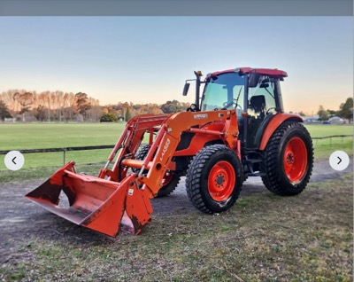
Kubota M9540 95hp 4x4 cab tractor with Kubota loader and 4-in-1 bucket — decent link
$65,000 · Moss Vale, NSW (500km)
2,230 hours · 95hp 4-cyl Tier 2 pre-emission engine (no AdBlue) · Kubota loader with euro hitch, 3rd-function hydraulics, 4-in-1 bucket · Cab with air-suspension seat, 18-speed shuttle, 2 rear remotes, 4WD with diff lock · One owner ex-slashing tractor, recent service; dealer listing (Highlands Equipment)
Clears every must with a pre-emission engine and low hours, but it is about 500km away and at the top of the price band.
Facebook Marketplace · first seen 2026-10-02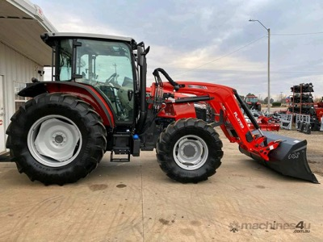
2021 Massey Ferguson 1204 4WD cab tractor with front-end loader, 1,278 hours — decent link
$65,000 (ex GST ($71,500 inc GST)) · NSW (suburb not stated)
1,278 hours · 120hp (88.2 kW) · Front-end loader listed, make and bucket not stated · Cab, 4WD, 12F/4R · Dealer listing; exact location not shown
Low hours and the right hp, but the loader spec and location are thin and $71,500 inc GST is near the top of the band.
Machines4U · first seen 2026-10-08
2021 Kubota M108S tractor with LA1403 loader — decent link
price TBC (Pickles National Agricultural Online, lot 27; page says not yet open for bidding) · Mildura, VIC (390km)
Hours not stated on the page · Lot 27, National Agricultural Online sale · Page shows 'Item not yet available for sale' today, no bid or close date yet
Right machine and loader, 2021, but no hours or bid are shown yet and the sale has not opened.
Pickles · ends 2026-10-13 · first seen 2026-09-28- 2021 Deutz-Fahr 4080.4E cab 4WD tractor with factory 4-in-1 front-end loader — stretch link
$47,500 · Harcourt North, VIC (370km)
960 hours · hp not stated by seller; check it clears the 90hp floor · Factory-fitted 4-in-1 FEL with euro hitch, hay forks included · Air-conditioned cab, 4-cyl diesel, 15 gears with shuttle, 4WD · Listed today, 2 owners; seller moving, Cosmo mulcher available separately ($50,000 for both)
Very low hours, cab and loader at a fair price from a known make, but the seller does not state hp and the 4080 model number suggests it may sit under 90hp.
Facebook Marketplace · first seen 2026-10-10
- 2002 John Deere 6310 SE MFWD with JD 640 front-end loader — stretch link
$65,000 (negotiable, no GST) · Dubbo, NSW (400km)
5,180 hours, over the 4,500 cap · hp not stated by seller · JD 640 FEL with bag loader and hay forks · Second owner since 2014, serviced annually by Hutcheon & Pearce Dubbo · Good tyres, one rear new; listed 5 days ago
Dealer-serviced Deere with a loader, but 5,180 hours, 400km and $65,000 for a 2002 is a lot.
Facebook Marketplace · first seen 2026-10-10
- 2012 Kubota M8540 85hp tractor with X-36 front-end loader and forks (clearing sale) — stretch link
price TBC (On-site clearing sale Sat 17 Oct 10am, no GST, no buyer premium; no items sold prior) · Katunga, VIC (170km)
2,006 hours · 85hp, under the 90hp floor · X-36 front-end loader with forks · Cab or ROPS not stated · Registered to 24 Jan 2027
Close, low-hour Kubota with a loader going to a no-premium auction, but 85hp misses the floor.
Facebook Marketplace · ends 2026-10-17 · first seen 2026-10-10
recently gone: 2011 Deutz-Fahr Agrofarm 420 with CRX360 Plus loader, 232 hours at $61,500 (inc GST, dealer (Midstate Machinery Brokers)) (gone); 2013 John Deere 5090R (ex lease), 1,053 hours at $23,300 (auction closed 7:00pm AEDT 8 Oct; final bid not shown on the page; last bid read was $23,300) (sold); 1997 John Deere 6210 MFWD, cab, Burder front-end loader at $35,000 (sold); Massey Ferguson 5440 Dyna-4 4WD at $36,990 (reduced from $39,990 (was $37,750 on the last check)) (gone); Kubota M5101, 700 hours at $60,000 (plus GST) (sold)
Portable home, container or similar, 2+ rooms with bathroom
link
$5,000 to $30,000 · within 400km of Darlington Point, NSW
must have: bathroom; at least 2 rooms
nice to have: kitchen or kitchenette; container-based or relocatable build; ready to transport
Price band tracks quality: 5k for a rough site hut, 30k for a finished container home. Transport cost is worth noting separately.
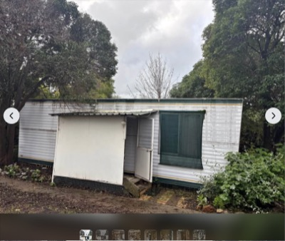
Transportable cabin / granny flat, 8m x 3.2m — strong link
$7,000 (open to offers; listing shows reduced from $20,000) · Deniliquin, NSW (170km)
8m x 3.2m · kitchen and living · bedroom with ensuite · used - fair · buyer to remove; seller can organise transport
Cheapest complete unit with kitchen, bedroom and ensuite, 170km away and open to offers.
Facebook Marketplace · first seen 2026-09-30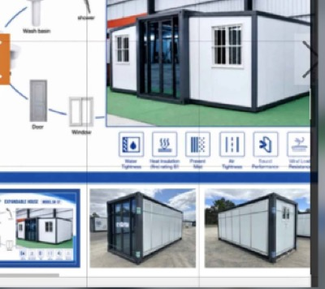
Expanding container cabin, 2 bedrooms and full bathroom, base unit (new) — strong link
$19,990 (plus GST if applicable) · Cobram, VIC (180km)
expands to 5.9m x 6.2m · 2 bedrooms · full bathroom plumbed ready to connect · electrical not included · dealer stock, inspection welcome · free delivery within 30km of Cobram, further at cost
New 2-bed with bathroom from a dealer 180km away, in band even after GST.
Facebook Marketplace · first seen 2026-09-30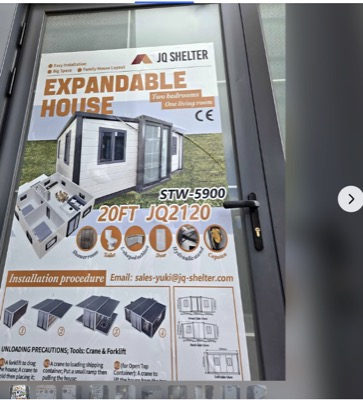
New expanding container cabin, 2 bedrooms, bathroom, kitchen — strong link
$22,990 (plus GST if applicable) · Cobram, VIC (180km)
expands to 5.9m x 6.4m · 2 bedrooms · full bathroom · L-shaped kitchen with stainless sink and mixer · electrical and plumbing ready for connection · double glazed · free delivery within 30km of Cobram, further at cost
The finished version of the Cobram base unit: kitchen fitted and wiring ready, still under $30k with GST.
Facebook Marketplace · first seen 2026-09-28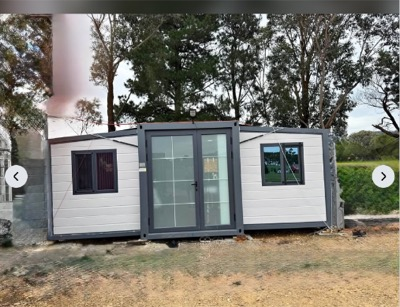
20ft expandable home, 2 bedrooms, kitchen, living, toilet and shower — decent link
$20,000 · Whittlesea, VIC (370km)
2 bedrooms · kitchen · living room · toilet and shower · used - like new · inspection by appointment in Whittlesea
Complete 2-bed layout at $20,000, but used and near the 400km edge, so no cheaper than Cobram new once transport is added.
Facebook Marketplace · first seen 2026-10-10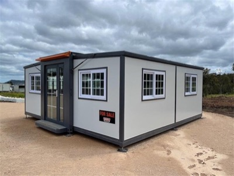
Unused expandable 2-bedroom container house with ensuite and kitchenette (model L0206-BR2) — decent link
$22,000 (opening bid, reserve set; plus 8% buyer's premium, GST inclusive) · Shepparton, VIC (230km)
2 bedrooms · ensuite with shower, toilet, sink · small kitchenette · 19ft x 20ft opened out · folded 5950 x 2200 x 2515mm, about 3,945kg · not wired; licensed electrician required · 0 bids at check · no delivery; collect within 5 business days of close; Hughes Brothers Removals quote Victoria-wide
Same spec as the Cobram units but $22,000 plus 8% with a reserve, so only worth it if the reserve is soft.
Grays · ends 2026-10-15 · first seen 2026-10-10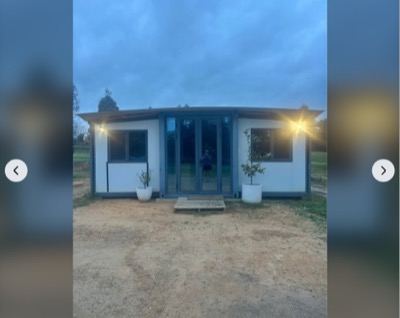
Expandable container home, living, kitchen, bedroom, bathroom — decent link
$28,000 (disconnect and fold-up for transport is $1,000 extra; transport at buyer's cost) · Junortoun (Bendigo), VIC (330km)
6.6m x 5.7m fully open · living room · kitchen with cabinets and sink · double bedroom with fold-out wall to make two · bathroom with vanity, shower, toilet · LPG instant hot water, 6 months old · electrical upgraded to Australian spec · used - good
Already wired and plumbed to Australian spec, which the new units are not, but $28,000 plus $1,000 fold-up is the top of the band.
Facebook Marketplace · first seen 2026-10-02
recently gone: Unused expandable 2-bedroom container house with ensuite at $6,400 (auction closed 14:00 AEST 30 Sep; Lloyds shows the result as Not for Publication; last seen bid $6,400 plus 16.5% premium) (gone); Cabin on skids, 7.4m x 3.4m, bathroom, kitchen, bedroom and bunk room at $9,000 (heading says $8,000, asking $9,000; open to offers implied) (sold); 13m tiny home, 2 bedrooms at $16,000 (sold); Relocatable home/cabin, 2 bedroom, 10m x 6m at $25,000 (buyer to remove; moves in 2 sections of 10m x 3m) (gone); Unused expandable 2-bedroom container house with ensuite at $4,000 (auction closed about 15:13 AEST 30 Sep; Lloyds shows the result as Not for Publication; last seen bid $4,000 plus 16.5% premium) (gone); Ausco modular building 12.0 x 3.0m, bedroom, bathroom, kitchen at $4,200 (last seen bid; auction closed 29 Sep after 174 bids, closing price not shown) (sold); Portable living quarters on skids, 3.6m x 9m at $20,000 (sold)
Chainsaw, Stihl or Husqvarna, 30 inch bar capable
link
$500 to $2,000 · within 100km of Melbourne, VIC
must have: Stihl or Husqvarna; rated to carry a 30 inch bar (e.g. Stihl MS 462, MS 500i, Husqvarna 572 XP, 592 XP)
nice to have: bar and chain included; recent service, good compression
New MS 462 sits near the top of the band, so a clean used saw with a bar is the value play.
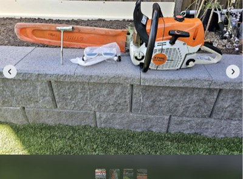
Stihl MS 462 C, 20in bar — strong link
$1,100 · Wollert, VIC (25km)
20in bar, chain near new · condition listed as like new · listed about an hour before this check, 10 Oct · seller invites a test run at Wollert
Cheapest MS 462 on the market, like new with a bar, at about half the $2,099 new price; call today before it goes.
Facebook Marketplace · first seen 2026-10-10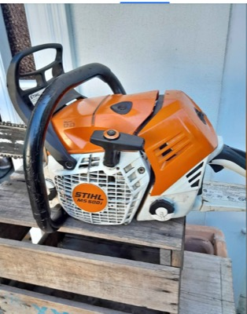
Stihl MS 500i, 25in light bar — strong link
$1,200 · Chadstone, VIC (15km)
25in light bar · good compression, runs strong · no inner spike · Chadstone pickup
Fuel-injected 79cc saw with a 25in bar at $1,200 and 15km away; still live, price unchanged.
Facebook Marketplace · first seen 2026-10-08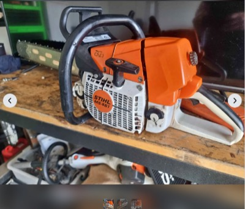
Stihl MS 461 Magnum, 20in bar — strong link
$1,200 · Wallan, VIC (55km)
20in bar · pre-M-Tronic 461, seller moved to a 661 five years ago so it has had light use since · listed two hours before this check, 10 Oct
Fresh listing of a 76cc 461 with bar at $1,200, $75 under the serviced 461 already on the list.
Facebook Marketplace · first seen 2026-10-10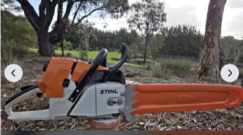
Stihl MS 461 Magnum, just serviced — strong link
$1,275 · Melbourne, VIC
76.5cc, low hours · full service done: filters, plug, fuel tank flush, oil pump and clutch checked · chain sharpened and bar cleaned · bar length not stated
Serviced 461 ready to cut at $1,275; still live, price unchanged.
Facebook Marketplace · first seen 2026-09-28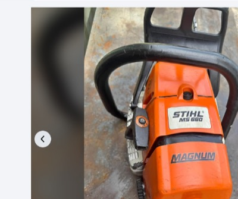
Stihl MS 660 Magnum, new 25in bar — strong link
$1,480 · Cockatoo, VIC (55km)
91.6cc · new 25in bar and chain · runs well, ready for use · listed under the generic title Chainsaw, so easy to miss
92cc saw with a new 25in bar in band; carries 30in with ease, and the generic title means less competition.
Facebook Marketplace · first seen 2026-10-10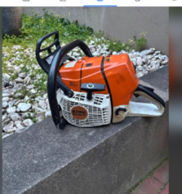
Stihl MS 661C, serviced, 25in bar and chain — strong link
$1,500 · Melbourne, VIC
serviced and checked over · 25in Stihl bar and chain in good condition · seller rated 66 on Marketplace · listed two weeks ago
Current-model 91cc saw, serviced, with a 25in bar at $1,500; still live, price unchanged.
Facebook Marketplace · first seen 2026-09-30
recently gone: Husqvarna 395 XP with spare bar and chain, 25in speed tip bar at $1,200 (sold); Stihl MS 462, 63 hours, ex-government at $1,250 (down from $1,400; description prices powerhead $1,400 and $1,500 with a 20in or 25in bar, so confirm whether $1,250 includes a bar) (sold); Stihl MS 661C Magnum at $1,200 (firm) (gone)
Offset discs, 24-32 plate, for a 90-130hp tractor
link
open on price · within 400km of Darlington Point, NSW
must have: 24 to 32 plates; maximum 3.0 to 3.5 m working width; matched to 90-130 hp
nice to have: bearings in good order; plates with life left, not dished out; local within 400km, or an overseas maker that ships to Australia
Width is the hard constraint: anything over 3.5 m is too much for the tractor and too wide to cart. Overseas makers (e.g. made in China, Italy, Turkey, Brazil) count if they ship to Australia: quote price plus freight and import costs.
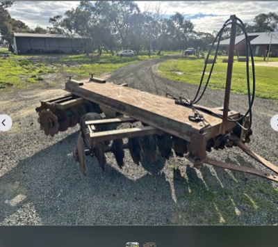
Shearer 300 24-plate trailing offset disc — decent link
$5,500 ($5,500 ono, down from $6,000) · Wharparilla, VIC (250km)
Shearer 300, 24 plates · 2.4 m working width · new 22-inch scalloped discs on the front gang, new front gang bolt · listed 6 weeks ago, used - good
Cheapest 24-plate set with a fresh front gang, but 2.4 m is narrower than the 3.0-3.5 m you want to run.
Facebook Marketplace · first seen 2026-09-30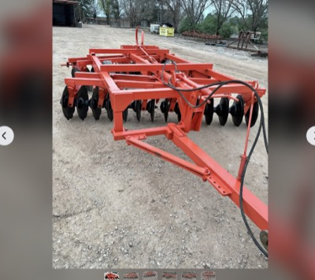
Blue Line 28-plate offset disc — decent link
$7,500 (cut from $13,500; cross-listed on Gumtree at $7,500 negotiable) · Griffith, NSW (40km)
28 plates, heavy duty · width not stated · new lift ram seals, new wheel bearings, gang bearings replaced as required · listed 5 weeks ago, used - good
28 plates 40 km away at a price that has nearly halved; confirm the working width is 3.5 m or under before you go.
Facebook Marketplace · first seen 2026-09-28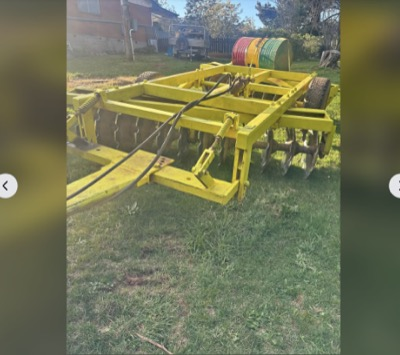
Heavy duty Australian made 24-plate offset discs — decent link
$7,700 (includes GST, negotiable; down from $8,800) · Orange, NSW (390km)
24 plates, 2.5 m cut · front gang of 12 discs just fitted with new bearings, receipt for over $5,000 of work · rear discs around 60% · hydraulic lift, truck tyres, needs at least 90 hp · seller would consider a swap for a direct drill
Fresh front gang and a 90 hp match at $7,700, but 2.5 m cut and 390 km put it at the edge of your range.
Facebook Marketplace · first seen 2026-09-30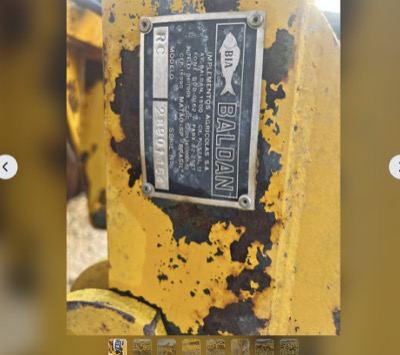
Baldan CRSG28 28-plate offset trailing discs — decent link
$8,000 · Myrtleford, VIC (330km)
Baldan CRSG-28, 28 plates, around 2.4 t · width not stated · oil bath bearings, one owner since new · plates worn: seller quoted $135 ex GST per plate for new ones, works as is but less aggressive · RHS bar added at the rear for trailing rollers · seller says a new set is around $24k
Heavy 28-plate Baldan with oil bath bearings at a third of new price; budget new plates if you want it biting hard.
Facebook Marketplace · first seen 2026-10-10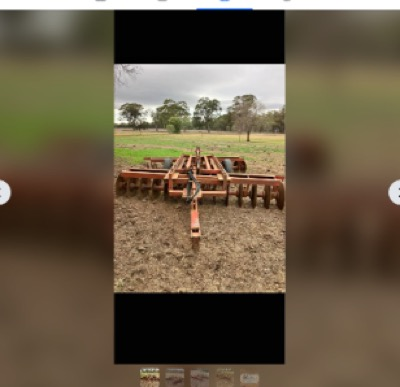
Jarrett 28-plate offset discs — decent link
$9,000 (listed as US$9,000 ono, probably an AUD slip; confirm) · Katamatite, VIC (180km)
28 plate Jarrett · width not stated · seller says excellent condition, hardly used · used - good, in stock
28-plate Jarrett described as hardly used, 180 km away; thin on specs, so ask width, bearing type and age.
Facebook Marketplace · first seen 2026-10-10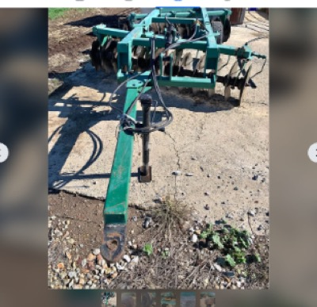
John Shearer 24-plate heavy duty offset disc — decent link
$9,500 · Undera, VIC (240km)
John Shearer, 24 plates, heavy duty · width not stated · hydraulic lift, hoses and tyres kept in good order, greased before every use · listed 9 weeks ago, condition given as used - like new
Well-kept Shearer 24-plate at $9,500; dearer than the Wharparilla 300 but presents better and is 240 km away.
Facebook Marketplace · first seen 2026-10-10
recently gone: Armstrong WCH 24-plate heavy offset disc at $7,250 (sold)
Tree root ripper, ideally a single deep tyne
link
open on price · within 400km of Darlington Point, NSW
must have: built for ripping tree roots: heavy shank, deep rip, not a general tillage or chisel ripper; matched to 90-130 hp
nice to have: single tyne; 3-point linkage; shear-bolt or spring release protection; replaceable points and shin; local within 400km, or an overseas maker that ships to Australia
One deep, heavy tyne pulls deepest for the horsepower and is what root ripping needs; multi-tyne tillage rippers are out. Overseas makers (China, Italy, Turkey, NZ etc.) count if they ship to Australia: quote price plus freight and import costs, and mark distance as overseas.
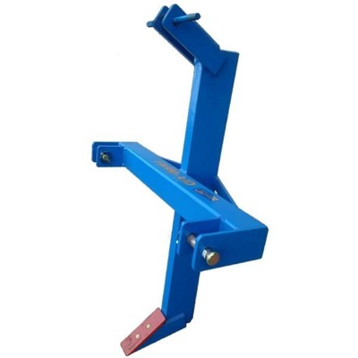
Farm-Aid FA106 heavy duty single-tine ripper (new) — strong link
$1,145 (inc GST, freight extra) · Coopers Plains, QLD (freight Australia-wide) (1230km)
single tyne, 150 x 50mm billet shank · Cat 2 3-point linkage · suits 60hp and over · working depth 700mm · reversible point 225 x 75 x 16mm · Australian made by Farm-Aid, Coopers Plains; seller Farm Supplies Machinery & Equipment, 07 3085 2777 · takes FA100 or Berends 0022 pipelayer as an option
Same 150x50 shank and Cat 2 as the Hayes for $145 less, 700mm working depth and a reversible point; freight from Brisbane is the one unknown.
pipeliner.com.au (Farm Supplies Machinery & Equipment) · first seen 2026-10-10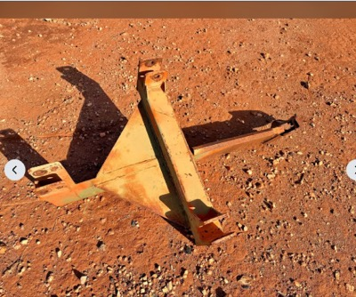
Linkage single-tyne ripper, North Yalgogrin — decent link
$250 (reduced from $350) · West Wyalong, NSW (100km)
single tyne · 3-point linkage · ripper tip bent · marked down from $350 · located North Yalgogrin, listed as in stock
Closest single tyne on the list at ~100km and $250; bent tip needs a look and no hp rating is given.
Facebook Marketplace · first seen 2026-10-02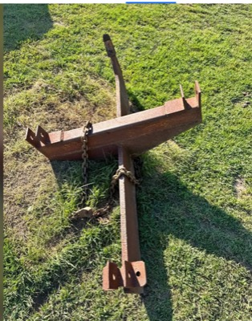
Single-tyne 3PL ripper, Limerick — decent link
$250 · Limerick, NSW (380km)
single tyne · 3-point linkage · heavy angle-iron frame with chain attached, per photo · seller describes it as dingy; surface rust · listed 6 days ago by Eudora Farm
Fresh listing, looks solidly built in the photo and $250, but no specs and ~380km near Crookwell.
Facebook Marketplace · first seen 2026-10-10- Massey Ferguson single-tyne deep ripper, 3PL (two available) — decent link
$270 (each, sold separately) · Crookwell, NSW (390km)
single tyne · 3-point linkage · two units: one lighter 1.4m with top link, one heavy solid frame · heavy unit has some rear-frame damage, seller says still works well · pick up Crookwell, listed as in stock
The heavy-frame unit is the one to ask about at $270; damage and ~390km count against it.
Facebook Marketplace · first seen 2026-10-08
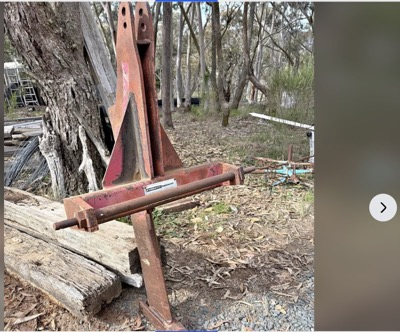
Jarrett single-tyne ripper / pipe layer, 3PL — decent link
$600 · Bywong, NSW (340km)
Jarrett brand · single tyne with pipe layer · 3-point linkage · estate sale, pick up Bywong · listed 3 weeks ago
Known maker and a proper pipe-layer ripper, but $600 with no model or hp stated and ~340km.
Facebook Marketplace · first seen 2026-10-01
recently gone: Massey Ferguson single-tyne deep ripper, 3PL (two available, sold separately) at $350 ($350 each, two rippers listed) (gone); Hayes pipe ripper and layer, 3PL at $750 (sold)
Winch for the 2013 Ford Ranger dual cab with ARB bullbar
link
open on price · within 100km of Melbourne, VIC
must have: 12V electric, low-mount, 9,500 to 10,000 lb: ARB rates the PX Ranger Summit bar for low-mount winches up to 10,000 lb (12,000 lb only if the bar is confirmed to take it); fits the standard 10in x 4.5in mount pattern, control box that mounts behind the bar or remotely; complete: winch, control box, remote, rope and hook
nice to have: synthetic rope over steel cable; known brand: Warn, ARB Intensity, Runva, Carbon, Ironman, TJM, Bushranger; wireless remote; fairlead to suit (hawse for synthetic)
Small enough to post, so listings elsewhere in Australia with shipping count as decent. Check the bar first: Summit or Deluxe, and the winch version rather than the non-winch cover panel. ARB names Warn, Magnum, Bushranger and Smittybilt low-mount winches for the Summit.
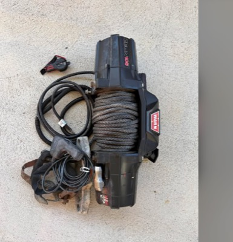
Warn Zeon 10-S, used like new, wired and wireless remote — strong link
$800 · Northern suburbs, Melbourne, VIC (20km)
Warn Zeon 10-S: 10,000 lb, 12V, low-mount, synthetic rope, standard 10in x 4.5in pattern, control pack mounts remotely · seller says hardly used, pulled out for a high-mount on a new build · comes with everything required, wired and wireless remote · photo shows winch with synthetic rope, control pack, wiring and hook · fairlead not mentioned; ask · listed 8 hours ago, Used - like new
A complete Zeon 10-S with both remotes at $800 is a third of its new price and exactly what the Summit bar is rated for; listed today, so call now.
Facebook Marketplace · first seen 2026-10-10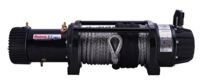
Runva EWB9500-Q Premium 12V, synthetic rope, wired and wireless remotes (new) — strong link
$1,065 (free metro shipping; Runva's own store lists it at $1,085) · Sunshine Coast, QLD (posted)
9,500 lb (4,309 kg) · 10mm x 25m Dyneema synthetic rope · wired 3.7m + wireless remote · 2-in-1 alloy hawse fairlead · relocatable control box with brackets · 254 x 114.3mm 4-bolt mount (10in x 4.5in) · in stock
Runva's premium 9,500 lb kit at $1,065 delivered clears every must with the standard mount pattern confirmed, $34 under the Carbon and $178 under the Warn.
4x4 Down Under · first seen 2026-09-30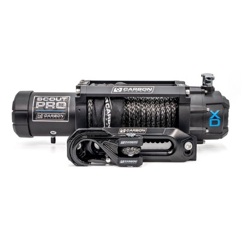
Carbon Scout Pro 10K V3, synthetic rope, wired and wireless remotes (new) — strong link
$1,099 (black sold out at 12:30 AEST, 9 other colours in stock) · Online, posted
10,000 lb (4,536 kg) · 24m x 10mm synthetic rope · wired 3.7m + wireless remote · alloy hawse fairlead · control box + wiring kit included · 12V 6.0 HP motor · lifetime mechanical / 5-yr electrical warranty · in stock
Unchanged at $1,099, in stock, complete 10,000 lb synthetic kit with both remotes and the best warranty in the group.
Carbon Offroad · first seen 2026-09-28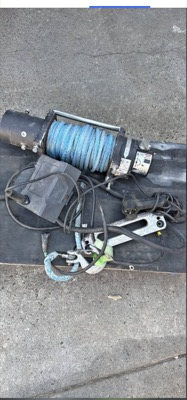
Warn Magnum 10k with remote — decent link
$380 (reduced from $450) · Melbourne, VIC
Warn Magnum 10,000 lb, 12V low-mount · seller: has remote, winch working, good condition · control box, rope type and fairlead not stated; ask before driving out · Used - good, listed 5 weeks ago, price down from $450 · seller account has 94 ratings
Cheapest Warn 10k on the market by a long way; worth one message to confirm the control box is included.
Facebook Marketplace · first seen 2026-09-28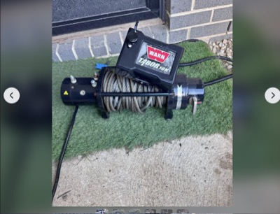
Warn Magnum 10k, complete setup, genuine remote — decent link
$700 (reduced from $800) · Melbourne, VIC
Warn Magnum 10,000 lb, 12V low-mount; Magnum is one of the brands ARB names for the Summit bar · seller: complete setup with all parts, ready to bolt on, all in working order · genuine Warn remote (wired or wireless not stated) · rope type not stated; Magnum 10 is normally steel cable, ask · Used - like new, listed 5 weeks ago, price down from $800
Complete Magnum 10k at $700 is fine value, but the two newer Warn synthetic-rope finds beat it on rope and price.
Facebook Marketplace · first seen 2026-09-30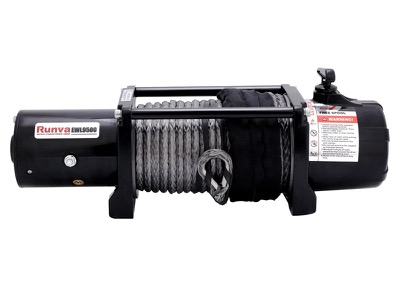
Runva EWL9500 12V, synthetic rope, wired and wireless remotes (new) — decent link
$815 (free metro shipping; same $815 on Runva's own store (runvawinch.com.au)) · Online (ships)
9,500 lb (4,309 kg), 12V · 10 mm x 25 m Dyneema synthetic rope · 3.7 m wired remote plus wireless remote · 2-in-1 aluminium hawse fairlead included · 254 x 114.3 mm mount pattern, control box with cables and brackets · add to cart live, no sale price; stock level not shown
Cheapest new complete synthetic-rope 9.5k kit with a wireless remote; the fallback if the used Warns go.
4x4 Down Under · first seen 2026-09-30
Mac mini M5 Pro or M6, 32GB or more RAM, 1TB or more SSD
link
open on price · within 100km of Melbourne, VIC
must have: Apple Mac mini with an M5 Pro, M6 or newer chip (Apple sells no plain-M5 Mac mini: the line is M6 and M5 Pro); 32GB or more unified memory; 1TB or more SSD
nice to have: new or Apple Certified Refurbished with full warranty; AppleCare transferable if used; pickup in Melbourne or posted
Posts easily, so Australia-wide listings with shipping count. M6 tops out at 32GB; 48GB or 64GB means M5 Pro. Compare against Apple's own build-to-order and refurbished prices.
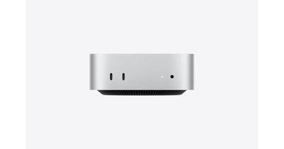
Mac mini M6, 32GB, 1TB (new, Apple) — decent link
$2,799 · Online (ships)
M6 12-core CPU, 12-core GPU · 32GB unified memory · 1TB SSD · New, 1-year Apple warranty · A$2,799.00 or A$233.25/mo
Cheapest config that clears every must; price unchanged and nobody is undercutting it.
Apple AU · first seen 2026-09-29
Mac mini M5 Pro, 48GB, 1TB (new, Apple build-to-order) — decent link
$4,049 · Online (ships)
M5 Pro 15-core CPU, 16-core GPU · 48GB unified memory · 1TB SSD · New, 1-year Apple warranty · A$4,049.00 or A$337.42/mo
The 48GB step costs $1,250 over the M6 32GB; price unchanged, no retailer or private seller has this config.
Apple AU · first seen 2026-09-29
Mac mini M5 Pro, 64GB, 1TB (new, Apple) — decent link
$4,949 · Online (ships)
M5 Pro 18-core CPU, 20-core GPU · 64GB unified memory · 1TB SSD · New, 1-year Apple warranty · A$4,949.00 or A$412.42/mo
Top memory option; price unchanged, and with the Facebook sealed unit gone this is the only 64GB on offer.
Apple AU · first seen 2026-09-29
recently gone: Mac mini M5 Pro, 64GB, 1TB, sealed with Apple receipt at $4,849 (firm; $100 under Apple new ($4,949)) (sold)
Drop deck trailer, 2001 or newer, $5,000 to $20,000
link
$5,000 to $20,000 · within 400km of Darlington Point, NSW
must have: drop deck (lowered loading deck) trailer; built 2001 or newer
nice to have: carry rating to suit a loader tractor; tandem axle with brakes; ramps or beavertail; current registration
Base and radius assumed to match the tractor and implement wants; the carry rating preference is a guess at hauling a loader tractor, so say if it should be different.
- 2006 beavertail tag trailer with ramps, 12 t ATM — strong link
$18,000 · Bendigo, VIC (300km)
2006 · 12 t ATM · 6 m long, single axle · Bartlett coupling · ramps · seller says very few km · rego not stated · listed 4 weeks ago
Only in-band trailer with a rating that comfortably carries a 4-6 t loader tractor; single axle is the trade-off.
Facebook Marketplace · first seen 2026-10-08
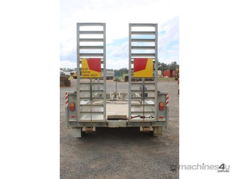
2018 Heavy Haul bogie plant trailer, 4,500 ATM, spring-assist ramps — decent link
$9,000 (ex GST ($9,900 inc GST)) · Dubbo, NSW (400km)
2018 · 4,500 kg ATM, 1,180 kg tare · bogie axle, rocker suspension · spring-assist ramps · galvanised · 4 m x 1.65 m deck · brakes and rego not stated
Cheapest tidy trailer on the list, but about 3.3 t payload only suits the lighter end of the tractor range.
Machines4u · first seen 2026-10-02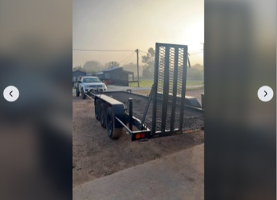
2010 Zannit plant trailer, tri axle, beavertail — decent link
$12,000 · Murchison, VIC (230km)
2010 · tri axle beavertail · registered · electric brakes, battery missing · seller says good for 3.5 t legally · 2 owners · listed 2 weeks ago
Registered tri-axle beavertail at $12,000, but the seller's 3.5 t legal rating is light for a 4-6 t tractor.
Facebook Marketplace · first seen 2026-10-02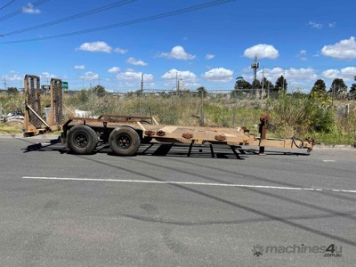
2001 DoT bogie plant trailer, 10,000 kg ATM, 5.2 m x 1.97 m — decent link
$12,500 (ex GST ($13,750 inc GST)) · Melbourne, VIC (dealer, delivers nationally) (450km)
2001 · 10,000 kg ATM · bogie axle · 5.2 m x 1.97 m deck · brakes, ramps and rego not stated · inspection by appointment
In band with a 10 t rating, but a 2001 build, outside the 400 km radius and the ad gives no ramp or brake detail.
Machines4u · first seen 2026-10-02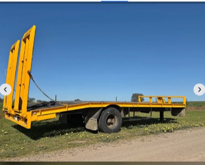
2014 plant trailer, 9 t ATM, spring suspension — decent link
$22,500 · Wagga Wagga, NSW (160km)
2014 · 9 t ATM · spring suspension · beavertail with ramps in photos, single axle in photos · brakes and rego not stated · listed 4 weeks ago
Right rating for the tractor and only 160 km away, but $2,500 over band and the ad is thin on brakes and rego.
Facebook Marketplace · first seen 2026-10-10- 2001 beavertail tandem axle trailer, 16 t capacity — stretch link
$24,000 (ONO, reduced from $28,000) · Griffith, NSW (40km)
2001 · 16 t capacity · tandem axle, near new axles · Bartlett 8-ball hitch · manual ramps · no rego · 4,380 kg tare · 9.5 m overall, 7.5 m x 2.5 m deck · listed 22 weeks ago
Closest trailer to home and rated well above the tractor, but $4,000 over band, unregistered, and 22 weeks unsold so there is room to negotiate.
Facebook Marketplace · first seen 2026-10-08
recently gone: 2020 Panus tri-axle drop deck trailer, 22,000 kg ATM at price TBC (Pickles page now shows SOLD) (sold); 2005 Ally Weld Tag 2 dual axle plant trailer at $2,600 (auction closed 7:00pm AEDT 8 Oct; final bid not shown on the page; last bid read was $2,600) (sold)
Dog cooling mat for the golden retriever
link
up to $150 · within 20km of Moonee Ponds, VIC
must have: large or extra large: at least 90 x 50 cm, so a 30 kg golden retriever can lie flat on it; actually cools: pressure-activated gel, water-filled or evaporative design, not a plain fabric bed
nice to have: self-cooling gel, no fridge, water or power needed; chew and scratch resistant cover, wipe clean; folds or rolls up; pickup within 20 km of Moonee Ponds, or posted
Price ceiling is a guess: a good XL gel mat is $40-$100 new, so a used one under $40 or a new one on sale is the value play. Posts easily, so Australia-wide listings with shipping count as decent.
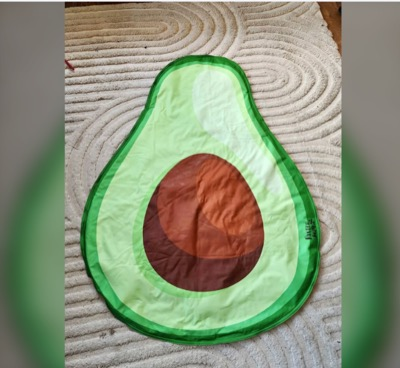
Large self-cooling dog mat, 108 x 78 cm (avocado print) — strong link
$15 · Yarraville, VIC (10km)
108 x 78 cm at widest points · self-cooling, no fridge needed, dissipates body heat · used, like new: dog did not take to it · listed 2 hours ago; free delivery if you live near Yarraville · seller rated 7 on Marketplace
Biggest mat found, bigger than most retail XLs, like new and a few km away for $15.
Facebook Marketplace · first seen 2026-10-10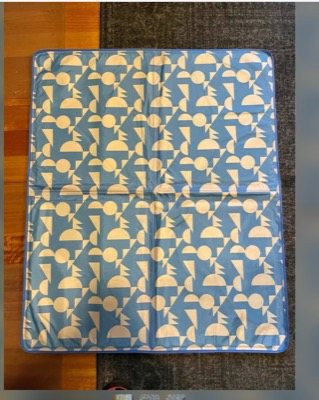
Petstock cooling gel mat, approx 97 x 80 cm — strong link
$20 · Glen Huntly / Ormond, VIC (20km)
approx 97 x 80 cm, 3 mm thick · cooling gel mat, Petstock brand · used, like new: dog lay on it once or twice · pickup Glen Huntly or Ormond, or posted for a flat $20 (AusPost) · seller rated 24, highly rated
Branded gel mat at a third of retail, large enough for a retriever, and it can be posted if the south-east drive is a bother.
Facebook Marketplace · first seen 2026-10-10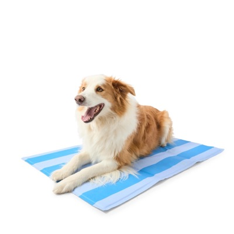
Kmart Summer Stripes Cool Mat Large, 99 x 59 cm — strong link
$29 · Online (ships) / Kmart Highpoint (0km)
99 cm x 59 cm, 3.2 kg · contains cooling gel; no water, freezing or electricity · cools by absorbing body heat · new, in stock online; click and collect at Kmart stores · medium size is $19 if the large sells out
Cheapest new gel mat that clears 90 x 50 cm, in stock today, and Highpoint is a short drive.
Kmart · first seen 2026-10-10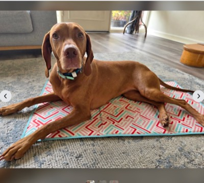
Dog cooling mat, 90 x 50 cm, used — decent link
$5 · Kew, VIC (10km)
90 x 50 cm, exactly the minimum size · used, fair: some staining from camping trips · cooling type not stated · door pickup Kew, listed 4 days ago
Five dollars for a mat at the minimum size; fine as a spare for the car or a trial before spending more.
Facebook Marketplace · first seen 2026-10-10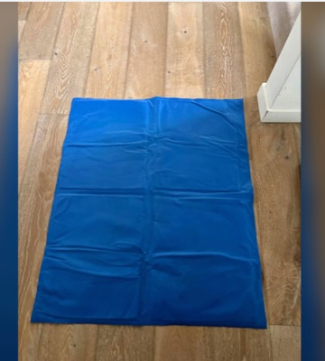
New large cooling pet mat, 95 x 80 cm, unused — decent link
$20 · Alphington, VIC (10km)
95 x 80 cm, plain blue · new, never used; seller paid $60 · 'stays cool': cooling type not spelled out, looks like a standard gel mat · pickup Alphington, listed a week ago · seller rated 41, highly rated
Unused at a third of what the seller paid, 10 km away; only the cooling mechanism is left unstated.
Facebook Marketplace · first seen 2026-10-10
500 L poly water trough or tub for the dog to cool off in
link
up to $500 · within 20km of Moonee Ponds, VIC
must have: plastic (poly) trough or tub, roughly 400 to 600 L; low enough for a golden retriever to step in: sides about 300 to 450 mm; wide enough to lie in: at least 1.2 m across or long
nice to have: drain bung; UV stabilised, food grade poly; smooth inside, no sharp edges; pickup within 20 km of Moonee Ponds, or delivered
Benchmark: Tank World 500 L sheep trough, 1,570 mm across, 340 mm deep, 50 mm drain bung. New poly troughs this size are a few hundred dollars from tank makers, rural stores and Bunnings; a used one on Marketplace is the value play. Price ceiling is a guess.
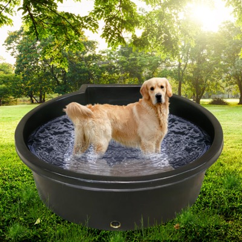
Tank World 500 L poly Dog Pool (DP500) — decent link
$495 (on sale from $595; Zone 1 delivery charge from Swan Hill applies, amount not shown on site; pickup Swan Hill is an option) · Swan Hill, VIC (delivers to Melbourne, Zone 1) (340km)
1,570 mm across · 340 mm deep · 500 L capacity · 40 mm drain bung · solid polyethylene, smooth easy-clean surface, reinforced top edging · same body as the 500 L sheep trough, no float valve · site notes a pool fence may be required for anything filled to 300 mm or more
Only new 500 L poly tub found that is both 1.2 m plus across and under 450 mm deep, and it is $5 under the ceiling before delivery.
Tank World · first seen 2026-10-10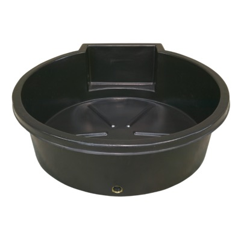
Tank World 500 L poly Sheep Trough (WTS500BL) — stretch link
$560 (on sale from $595; Zone 1 delivery charge from Swan Hill applies, amount not shown on site) · Swan Hill, VIC (delivers to Melbourne, Zone 1) (340km)
1,570 mm across · 340 mm deep · 500 L capacity · 50 mm drain bung · covered 25 mm float valve · polyethylene, reinforced top edging, smooth easy-clean surface
Same tub as the Dog Pool with a bigger bung and a float valve you do not need, and it is $60 over the ceiling before delivery.
Tank World · first seen 2026-10-10
Hunt log
all 17 runs
Prices are what the seller or auction house is asking, before premium, transport or GST unless noted. Verify everything before you commit money.
Nothing here is financial advice. Holdings and opinions are my own; the "agent" sections are written by an automated research skill and may be wrong. Built 2026-10-10 10:12 UTC.